9.1.7 ...的安装 TCBM 
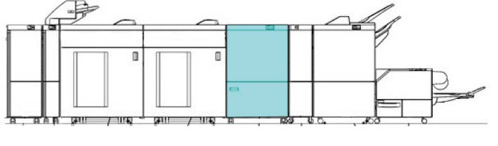
(图 1) ffw910011
产品代码
TCBM D2
QD200143 [Revoria 按下 PC1120, Revoria 按下 E1136G, Revoria 按下 EC1100, Revoria 按下 SC180G]
LD200217 (FB 设置 代码) [ApeosPro C810G, Revoria 按下 EC1100, Revoria 按下 SC180G]
QD200143: TCBM D2
EM100188 (FB: 选件): 电源线（3脚）
电源线（3脚）: EM100188 (FB), FBAP/WW (请参阅 6.2.5.1)
安装步骤
打开 the package 该 comes 使用 TCBM 和 检查 bundled/separate order items.
TCBM - 随附物品 (图 2)
编号
名称
数量
1
Earth 板
2
2
电源线 Protector 支架
1
3
对接 板
1
4
螺钉(M3x12)
1
5
螺钉 (用于 ...的安装 对接 板 (M4x6))
2
6
电源线 (选件)
1
7
电缆 Duct
1
8
螺钉 (用于 电缆 Duct, Earth 板 (M3x6))
4
9
NVM值 纸张, Shipment 检查 Sample
1
那里 是 编号 illustrations 用于 编号 4 to 6, 编号 8, 和 编号 9.
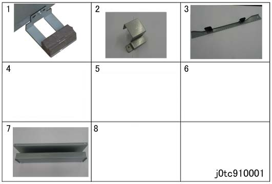
(图 2) tc910001
关闭IOT主机和打印服务器, 拔掉电源.

用于 如何 to 关闭电源, 请参阅 the 维修 手册 用于 IOT 和 打印服务器.
打开 the TCBM 外部 和 前面 Doors 和 拆卸 securing tape of 滑槽. (图 3)
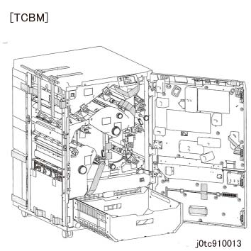
(图 3) tc910013
Follow the [TCBM] instruction 纸张 和 拆卸 折痕器 传输 支架 (前面/后面). (图 4, 图 5, 图 6)
If 电源 已开启 没有 removing the 传输 支架, 折痕 电机 将不会 be synchronized, 和 013-25* fault occurs.
拆卸螺钉（x3）.
拆卸 折痕 Inner 盖板.
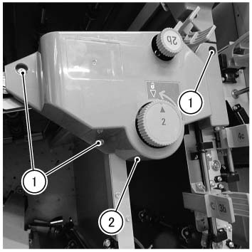
(图 4) tcw910001
拆卸螺钉, 和 拆卸 前面 Securing 支架.
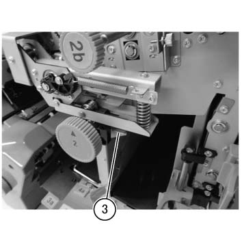
(图 5) tcw910002
拆卸螺钉, 和 拆卸 后面 Securing 支架.
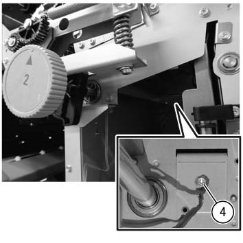
(图 6) tcw910003
拆卸 RH 侧面 电缆 tie. (图 7)
拆卸电缆 tie.
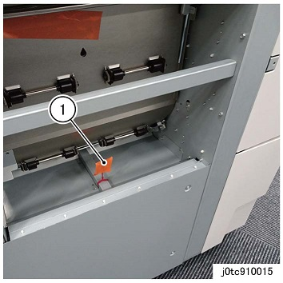
(图 7) tc910015
拆卸 LH 侧面 电缆 tie 和 the packaging tape. (图 8)
拆卸电缆 tie (x2).
拆卸 packaging tape.
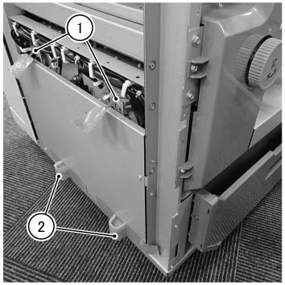
(图 8) tcw910004
安装 Earth Plates 到 TCBM. (图 9)
安装 Earth 板 (x2) 在...上 左侧.
固定 it by using 螺钉 (M3x7: x2) provided in the bundle.
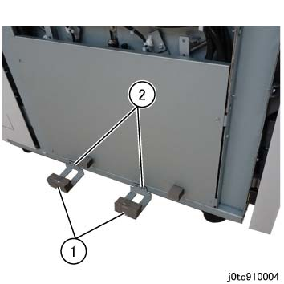
(图 9) tc910004
安装 对接 板 到 上游 模块 using 螺钉 (M4x16: x2) 从 the bundle. (图 10)
安装 对接 板.
固定 the 对接 板 by using 螺钉 (M4x16: x2).
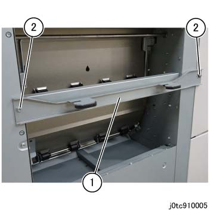
(图 10) tc910005
Temporarily 拆卸螺钉 该 secures the Latch Stopper. (图 11)
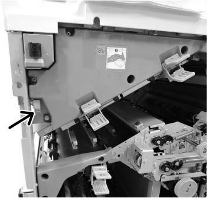
(图 11) tcw910005
对齐 hooks 的 上游 模块 对接 板 到 对接 slots 的 TCBM 和 push it in 直到 they 锁定. (图 12)
Visually 确认 the gasket 的 Earth 板 seals properly 和/与 编号 gap.
If 那里 is 任何 gap in the Earth 板 和 it 不 seal properly, or 如果 hooks 的 对接 板 请勿 match the 高度 的 对接 slots 的 TCBM, 执行 步骤 11 to 调整 高度 的 TCBM Caster.
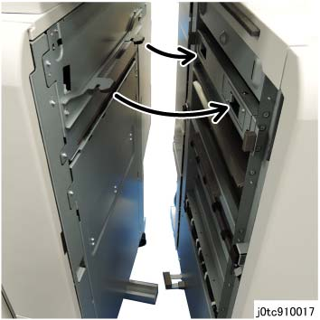
(图 12) tc910017
Use the provided wrench to 调整 高度 的 TCBM Caster as 所需的.
如果 is difficult to work 使用 provided wrench, use the ratchet wrench.
拆卸螺钉 at 装订器 D6 to extract the wrench. (图 13)
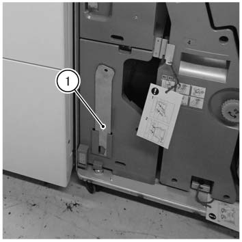
(图 13) tcw910006
前面 Caster: 拆卸 Waste Container 组件 to 调整. (图 14)
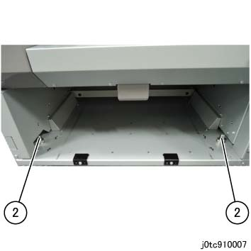
(图 14) tc910007
后面 Caster: 拆卸盖板 at ...的底部 后面 下方 盖板 to 调整. (图 15)

(图 15) tc910008
Use the wrench to 松开 the Securing 螺母. (图 17, 图 18)
Use the wrench to 转动 [前面 (x2)]: Adjusting 螺栓 (图 17), [后面 (x2)]: Adjusting Hexagonal 螺栓 (图 18) 和 调整 高度.
转动 hexagonal 螺栓 using the provided wrench.

(图 16) ifm910011
如果 is difficult to work 使用 provided wrench, use the ratchet wrench.
如果 is difficult to work 在后面, 拆卸后下盖板.
Use the wrench to 拧紧 the Securing 螺母. (图 17, 图 18)

(图 17) ia90011

(图 18) ip910018
固定 the Latch Stopper by using 螺钉. (图 19)
(图 19) tcw910005
拆卸 TCBM 连接器 盖板. (图 20)
Leave the Cheat 连接器 的 TCBM 连接器 (P902) connected.
拆卸螺钉.
拆卸 连接器 盖板.
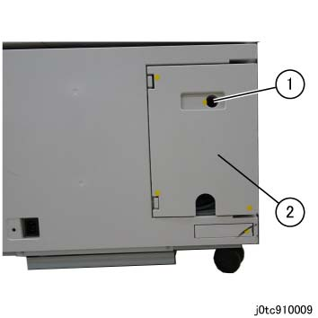
(图 20) tc910009
连接 TCBM 电缆 到 subsequent 设备 (示例： 当...时 connecting to 折叠器 单元 CD2). (图 21)
安装 电缆 Duct using 螺钉 (M3x6: x2).
Pull 和 转动 电缆, 和 连接连接器 (x3).
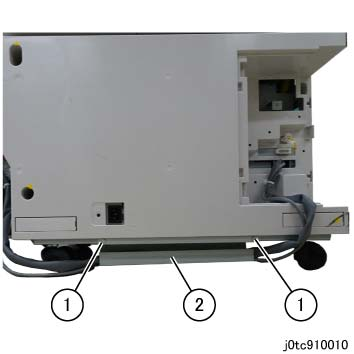
(图 21) tc910010
连接电源线 到 TCBM. (图 22)
插头 电源线 进入 the 入口 的 TCBM.
安装 电源线 Protector 支架 by using 螺钉 (M3x12) 从 the bundle.
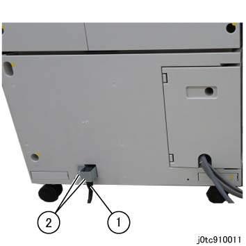
(图 22) tc910011
Reinstall 所有 the TCBM covers.
打开 IOT.
检查 操作 的 TCBM.
检查 状态 of 纸张 传输, 用于 异常 噪音, 和 等.
确认 纸张 不 get 卡住的, torn, contaminated, folded, or creased.
Store the bundled NVM值 纸张 和 Shipment 检查 Sample by removing the Waste Container 组件, 和 taping them 到底部 框架.